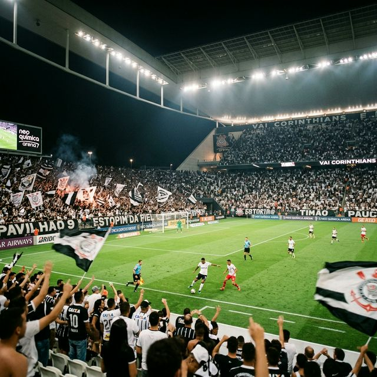
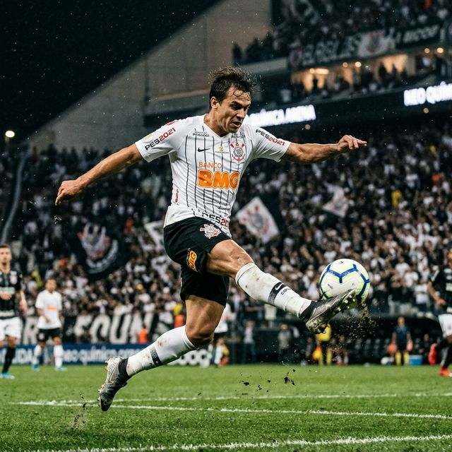
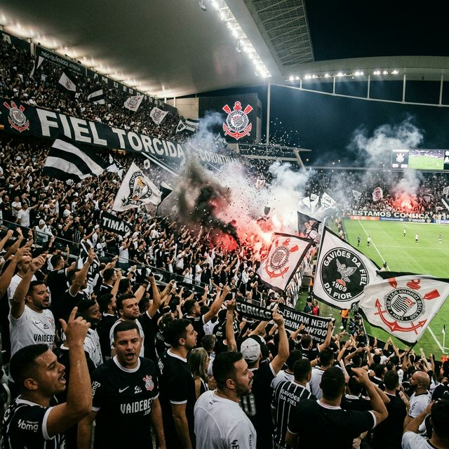

"Aqui tem um bando de louco, louco por ti Corinthians"

Corinthians empata com o Flamengo na Arena
Em clássico disputado na Neo Química Arena, o Corinthians empatou em 1 a 1 com o Flamengo pelo Campeonato Brasileiro. O Timão jogou com um jogador a mais durante boa parte do segundo tempo após expulsão na equipe carioca, criou várias chances, mas não conseguiu converter a pressão no gol da vitória.
Redação
22/03/2026 - 21:30

Empate sem gols fora de casa contra a Chapecoense
O Corinthians viajou até Santa Catarina e ficou no 0 a 0 com a Chapecoense na Arena Condá. Em um jogo truncado e de poucas oportunidades claras para ambos os lados, a equipe alvinegra somou apenas um ponto fora de casa pelo Brasileirão.
Redação
19/03/2026 - 19:00

Pacotão de Reforços: Gabriel Paulista, Matheus Pereira e Milans
Com o fim do transfer ban, o Corinthians se movimentou pesado no mercado. Entre os principais reforços confirmados estão o experiente zagueiro Gabriel Paulista, vindo da Europa, o lateral uruguaio Pedro Milans, e o meia Matheus Pereira. A Fiel vive a expectativa da estreia dos novos contratados.
Mercado da Bola
15/03/2026 - 14:00
Corinthians tenta a contratação de Arthur Cabral
O executivo de futebol Marcelo Paz confirmou o interesse no atacante Arthur Cabral, atualmente no Botafogo. A ideia da diretoria corintiana é um empréstimo até abril de 2027 com opção de compra. Apesar do interesse, os altos valores envolvidos ainda são o principal obstáculo para a concretização do negócio.